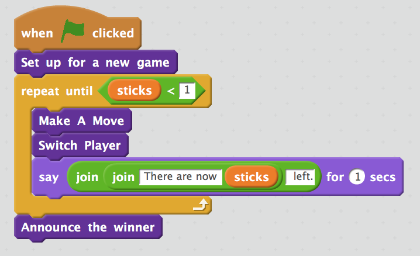
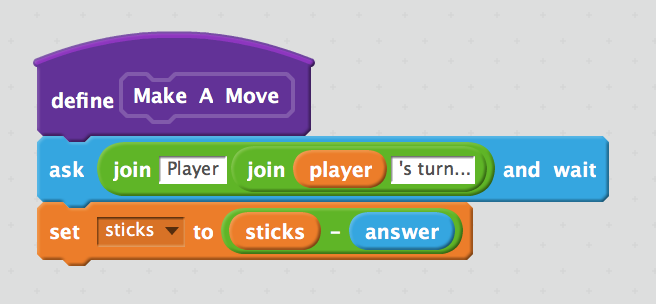

Game Theory
Introduction
Learn It
- Game theory has a lot of uses; it's not just for playing games. Today we're going to use it to create and play a game.
- We are going to learn about a concept called backward induction to solve zero-sum games.
- Backward induction is the process of reasoning backwards in time, from the end of a problem or situation, to determine a sequence of optimal actions. It proceeds by first considering the last time a decision might be made and choosing what to do in any situation at that time. Using this information, one can then determine what to do at the second-to-last time of decision. This process continues backwards until one has determined the best action for every possible situation (i.e. for every possible information set) at every point in time.
- To start you off, consider this puzle…
Research It

- (Picture courtesy of Wikipedia)
- A lot of these types of games were used by John von Neumann. Conduct some research online to see why von Neuman is important in the field of Computer Science as well as in Game Theory.
Try It
- "Nim" is an ancient two-player game played with sticks or stones. The objects are divided into piles.
- The players alternate turns.
- On each player's turn they may remove any number of sticks from one of the piles, up to the number of sticks remaining in that pile; but they can only take from a single pile on a given turn.
- The goal is to take the last stick, making you the winner.
- The strategy element is to make the other person clear out all but one pile, so you can take all the sticks in that last pile.
- To illustrate the basic theoretical idea behind the Nim strategy, let's first look at a simpler version of the game called "21".
- Imagine there are 21 sticks in a pile.
- The rules are: You can take one, two, or three sticks on your turn.
- Whoever takes the last stick on their turn wins.
- Have a few goes here against the computer (click the green flag to restart):
- If the computer goes first, it will always win.
- Can you find the winning strategy?
Design It
- You're going to make your own version of Nim for two human players.
- We start with a high-level plan; this is written in pseudocode to help work out the sequence of instructions we'll need to code before we start.
- The premise is this:
- Store the number of sticks and which player's turn it is.
- LOOP UNTIL THERE ARE NO STICKS LEFT:
- The current player makes a move.
- Change the current player.
- Output how many sticks remain.
- When the sticks have run out, announce the winner.
- We can write out some pseudocode to help us think about how we'd write out program.
sticks=21
player=1
LOOP UNTIL sticks<1:
The current <player> makes a move.
Change the current player.
PRINT How many sticks remain.
END LOOP
PRINT Winner
- Open >> this << Scratch link in a new tab. If you've a Scratch account, you can log into it at this point. If you've not got one (or can't remember your password), you can always use the 'File -> Download to your Computer' link in the top left-hand corner when you've finished your work. You've now got the pseudocode above all set out.

- Because we broke all the main coding ideas out into blocks (called functions when coding), this keeps the main program clean and easy to read.
- If you try playing the game, you'll see there are a few issues.
- It's always player 1's turn
- The game doesn't tell you who's won; it just stops.
- You can take 1, 2, 3, -2, 100… sticks each time.
- We now need to define the different function blocks to make the program work.
- If you're feeling ambitious, you could eventually implement an AI to play against once you get the two-player version working.
Code It: Switch player
- We have a variable called 'player'. Let's use this to store either a 1 or a 2 depending on who's turn it is.
- We need to change the player from 1 to 2 once player 1 has made his/her move.
- We also need to set the player back to 1 once player 2 makes their move.
- Therefore the code in the 'define Switch Player' block needs to be:
IF player = 1: player = 2 ELSE: player = 1 END IF
- Task: Write the code in Scratch to define this function, using the algorithm shown above.
Code It: Making a move
- What is a valid move? The player can pick either 1,2 or 3.
- People tend to make mistakes (or try and cheat) though, so we need to include a little 'data validation' to ensure the player is making a valid move.
- Our 'Make a move' algorithm is currently:
answer <-- INPUT "Player <player>'s turn..." sticks = sticks - answer
- The code in Scratch looks like this:

- We need to improve this to…
valid_move = False
REPEAT WHILE valid_move = False
answer <-- INPUT "Player <player>'s turn..."
IF answer>0 AND answer<4 THEN:
valid_move = True
sticks = sticks - answer
ELSE:
PRINT "Invalid move. Try again."
ENDIF
END REPEAT
- Task: Write the code to only allow valid moves.
- Tip: You'll need to start by creating a 'valid move' variable.
Code It: Establish the winner
- The main loop of the program continues until the last stick is removed (i.e. the 'stick' variable goes below 1).
- When this happens, we need to show a message to say that either player 1 or 2 is the winner.
IF player=1 THEN:
PRINT "Player 2 wins"
ELSE:
PRINT "Player 1 wins"
ENDIF
- Task: Code this in your script.
Learn It
- By using the rules, we can write an AI that always wins. In game theory, a "no-win" situation is one in which no player benefits from any outcome. This may be because of any or all of the following:
- Unavoidable or unforeseeable circumstances causing the situation to change after decisions have been made. This is common in Text adventures
- Zugzwang, as in chess, when any move a player chooses makes him worse off than before but the rules of chess means they have to move
- A situation in which the player has to accomplish two mutually dependent tasks each of which must be completed before the other or that are mutually exclusive (a Catch-22).
- Ignorance of other players' actions, meaning the best decision for all differs from that for any one player (as in the Prisoner's Dilemma).
Badge It
- Silver: Write a set of rules for someone who has never played '21' before so that they will always win.
- Gold: Write a working two-player game of 21 in Scratch. Upload a screenshot of your code AND the .sb2 file to the upload points.
- Platinum: Implement a one-player version with a computer opponent.
- The computer should randomly choose to play either a 1, 2 or 3.
- If you can do this, see if you can implement a strategy that means the computer will always win when it goes first.